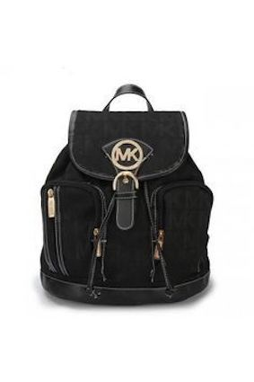
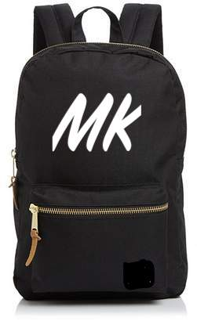

About:
We made this website because when Henry's great great great great great great grandmother made the first Mk bag and named it after herself. Back then, the only way to order and retrieve a bag was to walk for hours, and hours, and hours. with our new website everything is delivered right to your doorstep. when we started coding we figured out that coding was not easy. but we persevered and we bring to you what what we have today.
Here is our first bacpack(left) and here is our most recent backpack(right)
as you can see we have come a long way to get where we are today!

